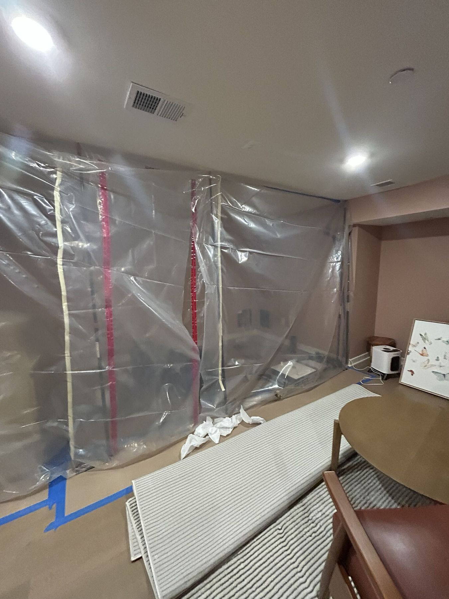
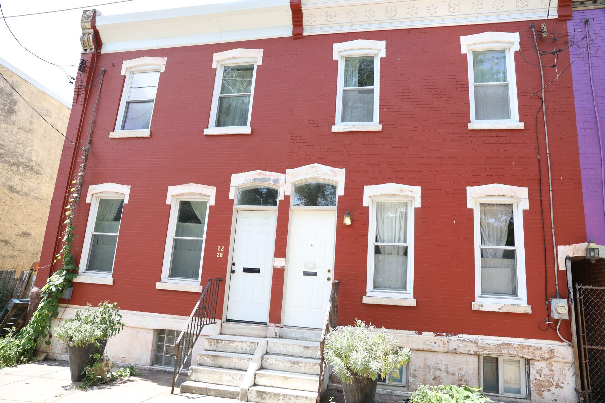
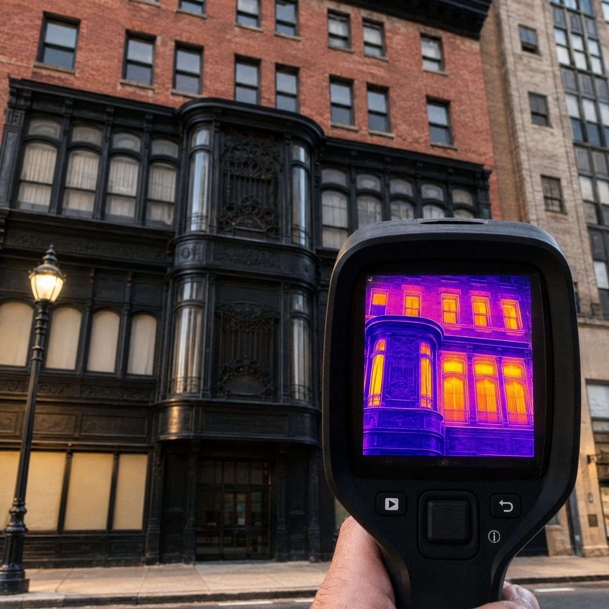

What this actually is
Buildings leak air through rim joists, top plates, recessed lights, duct chases, attic hatches and every penetration anyone has ever cut. That moving air carries moisture with it, and when it reaches a surface below its dew point, that moisture becomes liquid water inside your structure.
It is one of the most common reasons mold returns after an otherwise correct remediation. There was never a leak to find, so nobody found one.
We locate the leakage paths with thermal imaging and, where the scope justifies it, blower door testing. Then we seal them in the right order: air barrier first, then insulation, then ventilation. Insulating a leaky assembly traps the moisture instead of removing it.
Signs you have this problem
How the work runs
Where air is moving through the envelope, and in which direction, under real conditions.
Where the air barrier is supposed to be, where it actually is, and where the cold surfaces sit relative to it.
Rim joists, top plates, penetrations, chases and hatches. The air barrier made continuous.
Insulation restored over a sealed assembly, with ventilation sized so the building can still dry.
Re-scan, and where testing was used, re-test against the baseline number.
What is included
Questions people ask
Both, and we approach it as a moisture job. The energy saving is real and welcome, but the reason we are usually called is that something keeps growing in a cavity and nobody can find the leak.
A house can be too tight without adequate ventilation. That is a real failure mode and we design for it. The answer is controlled ventilation, not deliberate leakage.
Usually, yes. Ice damming is heat escaping into the roof cavity and melting snow that refreezes at the cold eave. Sealing and insulating the attic floor addresses the cause.
Related work

Major projectContain, remove, treat and verify, with the moisture source fixed. Remediation without that is just an expensive delay.
What we fix
Major projectRoofs, flashing, pointing, parapets, decks and coatings. The repairs that stop water getting in, done before anything inside is restored.
What we fix
DiagnosticFind the actual source of the water before anyone opens a wall. Thermal imaging, moisture meters and drone survey, inside and out.
What we fixNext step
We will tell you straight away whether this is something we can take on at your address.
Greater Philadelphia · northern Delaware